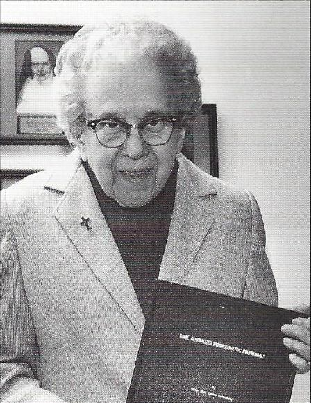

Mary Celine Fasenmyer
Imagem retirada desta fonte
Hoje em dia, é muito fácil fazer uma conta: se você digitar =1+1 na busca do Google, você verá aparecer uma calculadora com o 2 aparecendo como o primeiro resultado (curiosidade: se seu navegador for o Google Chrome, basta digitar =1+1 na barra de endereços e você verá o 2 já aparecendo no menu).
Mas e se você quiser resolver uma conta que envolve símbolos? Por exemplo, como descobrir os valores de x e y que satisfazem simultaneamente as equações x + 2 = y e y² = 1? Alguns ouvintes já devem ter visto uma calculadora gráfica HP da série 49/50 que possui capacidades simbólicas e conseguem resolver esse tipo de problema:
Imagem retirada desta fonte
Outros ouvintes podem também ter familiaridade com o site Wolfram Alpha, que além de resolver esses tipos de equações, pode realizar outras pesquisas bem divertidas, desde encontrar informações nutricionais para diversos tipos de alimento até rastrear a estação espacial internacional ou qualquer outro satélite em tempo real.
Esses são exemplos de sistemas de computação algébricos. Assim como a calculadora permite resolver problemas numéricos, sistemas de computação algébricos permitem resolver problemas que envolvem manipulação simbólica de variáveis.
Mas esses sistemas poderiam ser usados também para a demonstração de uma identidade? Por exemplo, será que poderiam ser usados para provar que o número de maneiras de formar um comitê de $$k \ge 1$$ pessoas de n indivíduos disponíveis e selecionar um chefe para o comitê selecionado é igual a $$n2^{n-1}$$? Em outras palavras, seria possível demonstrar que a seguinte identidade é verdadeira
$$\sum_{k=1}^n k { n \choose k } = n 2^{n-1}$$
para qualquer n de uma maneira automática?
Enquanto converter o problema de combinatória em uma identidade matemática ainda está sendo estudado, a demonstração da veracidade de certas identidades matemáticas já foi bem estudada: veremos no episódio de hoje a história da freira Mary Celine Fasenmyer, uma das precursoras de um algoritmo que permite a demonstração automática de um classe de identidades chamadas de identidades hipergeométricas, que são identidades que ocorrem com frequência em soluções de problemas combinatórios e também na análise de complexidade de algoritmos.
Mary Celine Fasenmyer nasceu em 4 de outubro de 1906 e cresceu na região petrolífera da Pensilvânia. A educação inicial de Fasenmyer foi na St. Joseph's Academy em Titusville, uma cidade da Pensilvânia que ficava a cerca de 48 km de Crown. Foi nela onde se formou, em 1923, e onde já exibia seu talento natural para Matemática.
Por dez anos após sua formatura, ela ensinou e estudou no Catholic Mercyhurst College em Erie, Pensilvânia, onde posteriormente, em 1933, se juntou às Irmãs da Misericórdia — uma instituição religiosa fundada em 1831 em Dublin, Irlanda, por Catherine McAuley. O serviço religioso dessas freiras sempre foi associada ao ensino, especialmente na Irlanda, onde as irmãs ensinavam católicos, e as vezes também protestantes, em uma época em que a educação era reservada principalmente para membros da Igreja da Irlanda.
Por decisão da ordem das Irmãs da Misericórdia, Celine foi enviada para ensinar na escola St. Justin e para estudar na Universidade de Pittsburgh, onde recebeu seu mestrado em 1937 — formando com um major em Matemática e com um minor em Física.
A ordem das Irmãs da Misericórdia também a enviou para a Universidade de Michigan para fazer doutorado, o que ela fez do outono de 1942 até junho de 1946, quando se formou. Seu doutorado foi orientado pelo prof. Earl Rainville, um matemático abençoado com uma memória fenomenal. Dizem que quando Rainville foi questionado sobre a média das turmas em um exame, ele respondeu que ainda não a tinha calculado — então começou a listar, de cabeça, as notas de cerca de vinte alunos — e em ordem alfabética! De acordo com lendas, ele podia se lembrar da localização exata de cada tópico nos livros que ele usa em sala de aula. Em um caso, ele se lembrou do número da página e localização de uma nota de rodapé em um texto de 600 páginas que ele havia perdido vários anos antes.
Sob a orientação de Earl Rainville, a jovem freira Fasenmyer escreveu a tese Some generalized hypergeometric polynomials que foi publicada na conceituada Bulletin of the American Mathematical Society.
Sobre sua tese, seu orientador Earl Rainville escreveu:
"Years ago it seemed customary upon entering the study of a new set of polynomials to seek recurrence relations... by essentially a hit-or-miss process. Manipulative skill was used and, if there was enough of it, some relations emerged; others might easily have been lurking around a corner without being discovered... The interesting problem of the pure recurrence relation for hypergeometric polynomials received probably its first systematic attack at the hands of Sister Mary Celine Fasenmyer."
Depois de obter seu doutorado, Fasenmyer publicou dois artigos que expandiram sua tese de doutorado. Estes trabalhos foram posteriormente usados pelos matemáticos Herbert Wilf e Doron Zeilberger para criar o chamado algoritmo de Wilf-Zeilberger, um algoritmo que permite a demonstração automática de muitas identidades combinatórias (especificamente, uma classe que é chamada de identidades hipergeométricas) por meio de computadores.
Zeilberger, famoso matemático experimentalista (que é um matemático que usa computação para auxiliar na demonstração e conjecturas de novos teoremas), chamou o trabalho de Fasenmyer de genial, e escreveu o seguinte sobre a importância do teorema de Fasenmyer para o trabalho dele e Wilf:
"I remember feeling that I was about to connect to a parallel universe that had always existed but which until then had remained very well hidden, and I was about to find out what sort of creatures lived there."
Por este trabalho, Zeilberger e Wilf ganharam o Prêmio Leroy P. Steele em 1998. De acordo com a inscrição do prêmio:
"New mathematical ideas can have an impact on experts in a field, on people outside the field, and on how the field develops after the idea has been introduced. The remarkably simple idea of the work of Wilf and Zeilberger has already changed a part of mathematics for the experts, for the high-level users outside the area, and the area itself."
Esses algoritmos foram implementados no Maple, um famoso programa de computação simbólica e numérico. Inclusive, até hoje Zeilberger publica suas descobertas matemáticas em seu blog usando o Maple e métodos similares ao que ele e Wilf desenvolveram.
Um fato interessante: muitas das descobertas de Zeilberger são co-autoradas por Shalosh B. Ekhad, que, curiosamente, não é nem um ser vivo.
Opa! Será que a freira Fasenmyer pode exorcizar esse morto-vivo? Não será necessário! Shalosh é apenas o computador pessoal de Zeilberger: Shalosh significa três em hebraico, e Ekhad significa um. Logo, Shalosh B. Ekhad é uma referência a "3B1", a marca do primeiro computador de Zeilberger.
Depois do seu doutorado, Fasenmyer voltou para Mercyhurst College para ensinar e não se envolveu em mais pesquisas matemáticas. No entanto, Wilf e Zeilberger resolveram prestar uma homenagem para Fasenmyer: em 1993, o prof. Wilf entrou em contato com Fasenmyer para realizar uma entrevista com a mulher que influenciou seu trabalho, e também para convidá-la para uma conferência de matemática discreta em Boca Raton, na Flórida.
Em sua entrevista, a freira mostrou como era dedicada à educação, explicando ao prof. Wilf o motivo de ter feito doutorado:
"My whole aim in getting my doctor's degree was for the college. I didn't want to do more research, except what would help me to be a better teacher."
A conferência de matemática discreta foi um sucesso: contou com a presença de cerca de 500 pessoas de 15 países. A diocese concedeu-lhe um subsídio de viagem e assim ela pôde assistir à conferência. Quando Wilf apresentou a freira de 87 anos ao público, ela se levantou e disse que gostaria de fazer apenas dois comentários. Primeiro, ela queria agradecer ao professor Wilf pelo convite. E, em segundo lugar, comentou: "Eu quero que todos vocês saibam - eu realmente fiz esse trabalho".
Em 27 de dezembro de 1996, a freira Fasenmyer morreu silenciosamente em seu sono, depois de desfrutar de uma festa comunitária na noite anterior. Além da sua genialidade, sua bondade e generosidade foram relatadas em seu obituário por dois ex-estudantes:
"Sr. Celine, a saint indeed as were many of the wonderful sisters who taught our family for twenty-five years. They provided us with spiritual and intellectual foundations that lasted a lifetime. My earthly friendship with Sr. Celine started in 1940 and continued for 56 years. Hoorah! Gloria in excelsis Deo! — ex-estudante"
"The biggest asset that Sr. Celine left behind is her love and kindness to all people. She wrote: remember, Edward, the only thing that matters in this life is how much you give from yourself to others. Reading her Christmas card was the best part of Christmas. — ex-estudante"
Em homenagem à freira, concluímos essa Byta História com um dos versículos da Epístola de Tiago, um dos livros do Novo Testamento:
"Mas a sabedoria que vem do alto é antes de tudo pura; depois, pacífica, amável, compreensiva, cheia de misericórdia e de bons frutos, imparcial e sincera — Tiago 3:17"
Extras:
- Para o ouvinte que quiser ser aprofundar mais no tema de demonstrações automáticas de identidades hipergeométricas e o contexto em que elas surgem, recomendamos o livro "A=B", escrito por Marko Petkovšek, e pelos próprios professores Wilf e Zeilberger. Este livro é disponibilizado gratuitamente no site pessoal do Prof. Wilf, e o capítulo 4 é dedicado exclusivamente ao método de Celine.
- Clicando neste link é possível ver que o Wolfram Alpha não só demonstra a identidade proposta no começo do episódio, mas também consegue achar a solução da soma diretamente. Para mais detalhes, recomenda-se a leitura do livro "A=B", em especial, sobre o algoritmo HYPER, feito pelo co-autor do livro A=B, Marko Petkovšek.
- Uma outra forma clássica de verificar identidades é por meio de uma técnica chamada de indução finita. Apesar de usar outro tipo de algoritmo, também é possível realizar provas desse tipo no WolframAlpha.
- A certificação de identidades hipergeométricas não é a única tarefa que foi automatizada por sistemas de computação algébricos. Há vários exemplos de tarefas, como a certificação da positividade de polinômios. Este é um problema importante em robótica, cuja resolução está relacionada com a importante questão da estabilidade de um robô.
- Embora a inteligência artificial esteja dando os primeiros passos nos problemas de demonstrações automáticas, um artigo de 2020 da conferência "International Conference on Learning Representations", pesquisadores propuseram usar redes neurais para resolver problemas simbólicos bem complexos de cálculo diferencial e integral — e os resultados foram surpreendentes: superaram sistemas comerciais de álgebra computacional, em particular o MATLAB e o Mathematica.
- Entrevista do prof. Wilf com Mary Celine Fasenmyer.
- Aplicação de deep learning em matemática simbólica.
Este texto foi escrito por Hugo Tadashi e adaptado por Mateus Mendelson.
Referências:
- Eilers, Søren, e Rune Johansen. Introduction to experimental mathematics. Cambridge University Press, 2017. (Em particular, ver pg. 161)
- Biografia do Prof. Earl D. Rainville.
- Biografia de Mary Celine Fasenmyer.